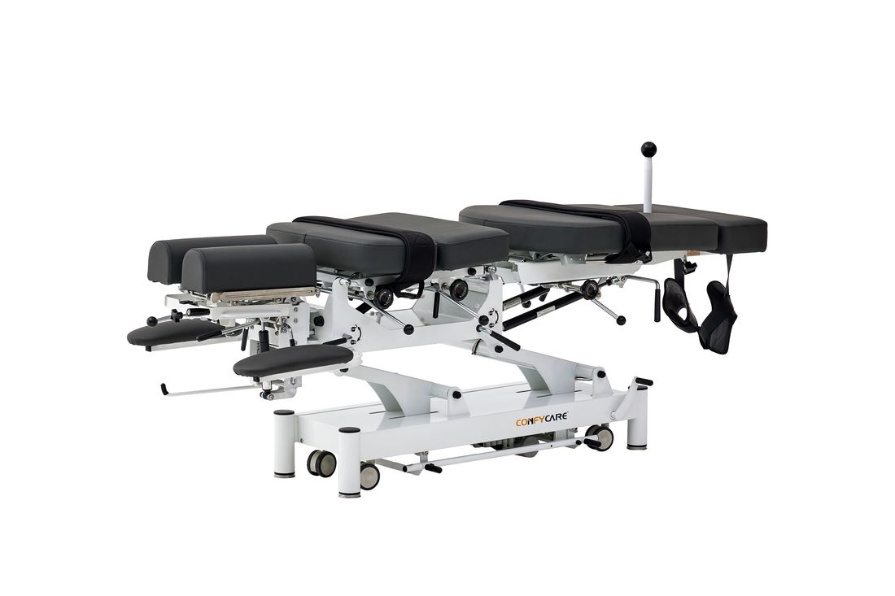
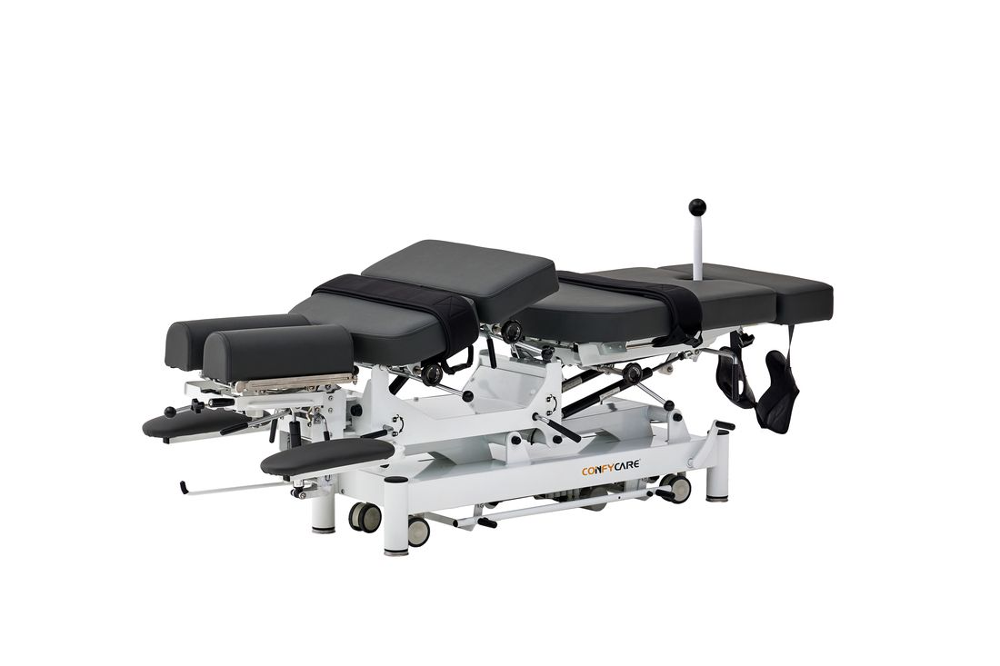
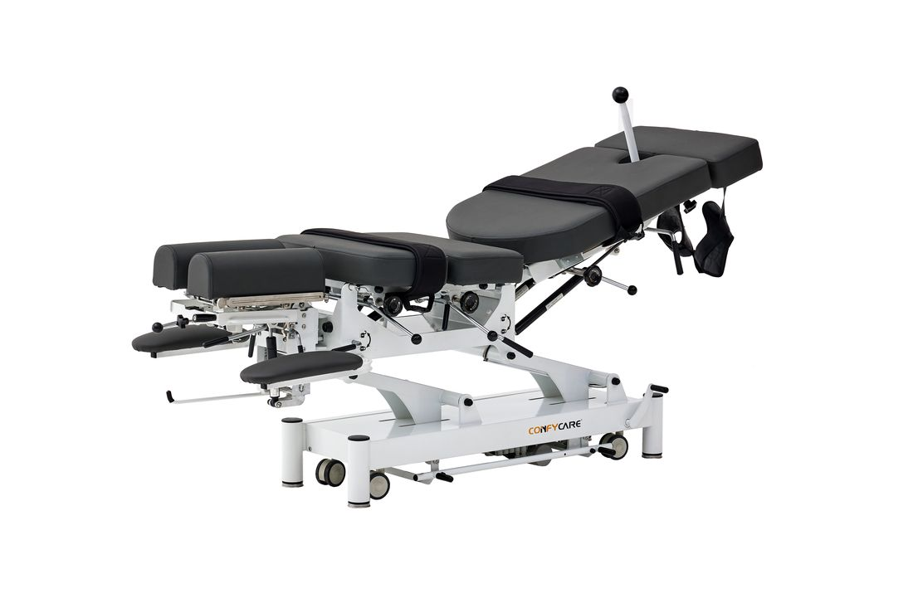

Ref. EL07BPRO23SL.2.A66.GF
ALMA PRO
Elektrische Behandlungs- und Therapieliege mit vier Drop-Sektionen, motorisierter Lumbaltraktion und T-Bar-Flexionskontrolle.
- Höhenbereich56–90 cm (elektrisch, Hi-Lo)
- Traglast250 kg
- Drop-Sektionen4 (zervikal, thorakal, lumbal, pelvin)
- AntriebTiMOTION-Motor
- Polsterung7,5 cm · Schaumdichte 100 kg/m³
- BezugSchwer entflammbares PVC-Vinyl (BS 5852)
- Maße176 × 72 × 74 cm
- Gewicht118 kg
- ZertifikateISO 13485 · MDR CE · FDA